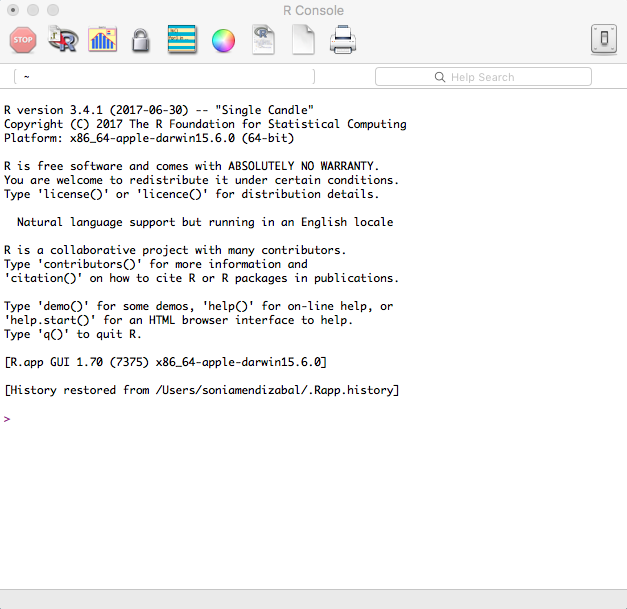

Taller de Introducción a R
1
Introducción al taller
Programa
2
Introducción a Herramientas
¿Qué es R?
2.1
R Console
2.2
RStudio
2.3
Descarga
2.4
RStudio Layout
3
Tipos de Datos
3.1
Vectores
3.1.1
Tipo de vectores
3.1.2
Nombres de vectores
3.1.3
Selección de elementos en vectores
3.1.4
¿Qué pasa si sumamos los días de fin de semana?
3.1.5
Comparación de elementos
3.1.6
Gráfica de vectores
3.1.7
Vectores de distribuciones
3.2
Matrices
3.2.1
Crear una matriz
3.2.2
Nombres de matrices
3.2.3
Selección de elementos en una matriz
3.2.4
Operaciones en matrices
3.2.5
Operaciones por dimensiones
3.2.6
Nuevos valores
3.3
Factores
3.3.1
Variable categórica nominal
3.3.2
Variable categórica ordinal
3.3.3
Resúmen de factores
3.4
Dataframe
3.4.1
Crear un dataframe
3.4.2
Nombres de dimensiones
3.4.3
Seleccion de elementos
3.4.4
Orden de posiciones
3.4.5
Funciones útiles para data frames
3.5
Listas
3.5.1
Crear una lista
3.5.2
Nombres de elementos
3.5.3
Selección de elementos en una lista
3.5.4
Nuevos valores a la lista
3.5.5
Funciones útiles para listas
3.6
Ejercicios
3.6.1
Ej: Hidden Figures IMDB
3.6.2
Ej: Calificación promedio
3.6.3
Ej: Pesos a dolares
4
Funciones
Una caja negra
4.1
Escibir una función
4.2
Argumentos de funciones
4.2.1
Argumentos predeterminados
4.2.2
Argumentos nulos
4.3
Valores faltantes
4.4
Alcance de la función
4.5
Funciones para funciones
4.6
R Packages
4.6.1
Paquetes predeterminados
4.6.2
Instalar paquetes
4.6.3
Cargar paquetes
4.7
Ayuda en R
4.7.1
Vignettes
4.7.2
Más referencias
4.8
Ejercicios
4.8.1
Ej: Suma de valores absolutos
4.8.2
Ej: Likes
4.8.3
Ej: Grafica de gasolina
4.8.4
Ej: Instala y carga
4.8.5
Ej: Search
5
Iteraciones
5.1
For loop y familia Apply
5.1.1
apply()
5.1.2
lapply()
5.1.3
sapply()
5.2
While Loop
5.3
Ejercicios
5.3.1
Ej: Ciudad de México
5.3.2
Ej: Mínimo y máximo
5.3.3
Ej: Precio de la gasolina
5.3.4
Ej: Estadísticos importantes
5.3.5
Ej: Nombres y fechas
5.3.6
Ej: Función anónima
5.3.7
Ej: Tempraturas
5.3.8
Ej: ¡Demasiado Rápido!
6
Manipulación
Proceso estándar
6.1
Importación y exportación de datos
6.1.1
Working directory
6.1.2
Importar datos locales
6.1.3
Importar datos en línea
6.1.4
Exportar datos
6.2
Pipes
6.3
Limpieza y reestructura
6.3.1
Principios de datos limpios
6.3.2
Problemas más comunes
6.3.3
Funciones de reestructura
6.4
Split-apply-combine
6.5
Referencias
7
Visualización
The Grammar of Graphics (gg)
ggplot2
7.1
Elementos
7.1.1
Base
7.1.2
Colores, formas y tamaños
7.2
Geoms
7.2.1
Suavizamiento
7.2.2
Boxplot
7.2.3
Histogramas
7.2.4
Barras
7.2.5
Series de tiempo
7.2.6
Información estadística
7.3
Quick plots
7.4
Ejercicios
7.5
Referencias
Published with bookdown
Taller de Introducción a R
2.1
R Console
